- Bib10-11 アジャイル開発「ITSS+」
- 【2018年4月12日】
- アジャイル領域へのスキル変革の指針【2018年4月IPA】
- アジャイルソフトウェ開発宣言の読みとき方
- アジャイルなアプローチで期待される成果を出すための秘訣として、方法論やプロセス、ツールを導入するだけではなく、考え方の規範となるマインドセットや原則を理解し実践することが重要です
- アジャイルソフトウェア開発宣言のマインドセットはこれからの時代に必要なもの
- 人々の価値観の多様化や国際化によって常に変化し続けるビジネス市場の激流の中では、変化に適応しながら競争力を高めていく能力を育てていくことは大変重要です。
- アジャイルソフトウェア開発宣言
- プロセスやツールよりも個人と対話を、
- 包括的なドキュメントよりも動くソフトウェアを、
- 契約交渉よりも顧客との協調を、
- 計画に従うことよりも変化への対応を、
- 「アジャイルソフトウェア開発宣言」に対する誤解と真意
- • 「対面コミュニケーション」
- 個人同士の対話を通じて相互理解を深めることで、よりよいチームが作られる。
- • 「実働検証」
- 動くソフトウェアを使って繰り返し素早く仮説検証をし、その結果から学ぶことがよりよい成果を生み出す。
- • 「顧客とのWin-Win関係」
- お互いの立場を超えて協働することにより、よりよい成果と仕事のやり方を作ることができる。
- • 「変化を味方に」
- 顧客ニーズやビジネス市場の変化は事前計画を狂わす脅威ではなく、よりよい成果を生み出す機会と捉える。
- アジャイル宣言の背後にある原則
- 顧客満足を最優先し、価値のあるソフトウェアを早く継続的に提供します。
- 要求の変更はたとえ開発の後期であっても歓迎します。
- 変化を味方につけることによって、お客様の競争力を引き上げます。
- 動くソフトウェアを、2-3週間から2-3ヶ月というできるだけ短い時間間隔でリリースします。
- ビジネス側の人と開発者は、プロジェクトを通して日々一緒に働かなければなりません。
- 意欲に満ちた人々を集めてプロジェクトを構成します。
- 環境と支援を与え仕事が無事終わるまで彼らを信頼します。
- 情報を伝えるもっとも効率的で効果的な方法はフェイス・トゥ・フェイスで話をすることです。
- 動くソフトウェアこそが進捗の最も重要な尺度です。
- アジャイル･プロセスは持続可能な開発を促進します。
- 一定のペースを継続的に維持できるようにしなければなりません。
- 技術的卓越性と優れた設計に対する不断の注意が機敏さを高めます。
- シンプルさ（ムダなく作れる量を最大限にすること）が本質です。
- 最良のアーキテクチャ・要求・設計は、自己組織的なチームから生み出されます。
- チームがもっと効率を高めることができるかを定期的に振り返り、それに基づいて自分たちのやり方を最適に調整します。
- 原則01 顧客の満足を求め続ける
- 「顧客満足を最優先し、価値のあるソフトウェアを早く継続的に提供します。」
- 原則02 要求の本質を見抜き、変更を前向きに
- 「要求の変更はたとえ開発の後期であっても歓迎します。変化を味方につけることによって、お客様の競争力を引き上げます。」
- 原則03 成果物を2-3週間で、リリースし続ける
- 「動くソフトウェアを、2-3週間から2-3ヶ月というできるだけ短い時間間隔でリリースします。」
- 原則04 全員で共通の目標に向かおう
- 「ビジネス側の人と開発者は、プロジェクトを通して日々一緒に働かなければなりません。」
- 原則05 人の意欲は信頼から
- 「意欲に満ちた人々を集めてプロジェクトを構成します。環境と支援を与え仕事が無事終わるまで彼らを信頼します。」
- 原則06 顧客も開発チームも直接対話で
- 「情報を伝えるもっとも効率的で効果的な方法はフェイス・トゥ・フェイスで話をすることです。」
- 原則07 進捗も品質も現物で
- 「動くソフトウェアこそが進捗の最も重要な尺度です。」
- 原則08 一定のペースでプロジェクトにリズムを 一定のペースでプロジェクトにリズムを
- 原則09 ｙとい技術、よい設計、よい品質の向上
- 「技術的卓越性と優れた設計に対する不断の注意が機敏さを高めます。
- 原則10 ムダ＝価値を生まない、探してヤメ ムダ＝価値を生まない、探してヤメ る
- 「シンプルさ（ムダなく作れる量を最大限にすこと）が本質です。」
- 原則11 よいモノはチームから
- 「最良のアーキテクチャ・要求設計は、自己組織的なムから生み出されます。」
- 原則12 自分たちのやり方を毎週、調整する
- 「チームがもっと効率を高めることができるかを定期的に振り返り、それに基づいて自分たちのやり方を最適に調整します。」
- アジャイル開発の進め方 アジャイル開発の進め方
- 本書におけるアジャイル開発のスコープと 本書におけるアジャイル開発のスコープと 体制について（前提）
- 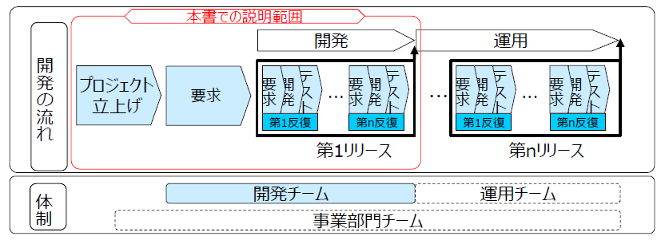
- 目次
- ■アジャイル開発のプロセス
- -アジャイル開発のプロセス（スクラムの例）
- -アジャイル開発の進め方特徴（スクラムの例）
- -役割（ロール)の特徴 (スクラムの例)
- -開発プロセスと役割（ロール）の関連（スクラムの例）
- ■アジャイル開発チームのつくり方
- -アジャイル 開発チームのもつべきスキル
- -スキル一覧
- ■参考資料
- <参考 1> 従来型ロールとアジャイの比較表
- <参考 2> アジャイル開発の概念整理 アジャイル開発の概念整理
- ■アジャイル開発のプロセス
- -アジャイル開発のプロセス（スクラムの例）
- 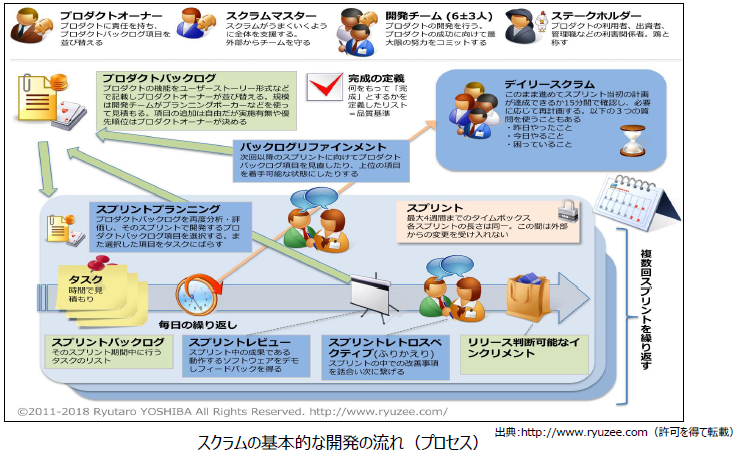
- •スクラムは反復（イテレーション）を繰り返す開発プロセスです。この反復の単位を「スプリント」と呼びます。スプリントの中身は、「スプリントプランニング」「デイリースクラム」「スプリントレビュー」「スプリントレトロスペクティブ（ふりかえり）」、そして実際の「開発作業」です。
- •「スプリント」は1～4週間の時間枠（タイムボックス）であり、予定されている機能が完成できなくても延長されることはありません。この期間内で開発チームはスプリントバックログの開発に集中し、リリース判断可能なインクリメント（プロダクト）を作り出します。
- •「スプリントバックログ」は、プロダクトバックログから抜き出された、今回のスプリントで追加する機能のリストを言います。スプリントプランニングでプロダクトオーナーの決めた順位と開発チームが決めた見積りの両方の情報を合わせて抜き出されます。このリストは一回のスプリントにだけ使用されます。
- •「リリース判断可能なインクリメント」とは、一回のスプリントにおける成果を指します。スプリント終了時にはプロダクトが動く状態であることが必要となり、これをレビューして、プロダクトオーナーが実際にリリースするかどうかを決定します。すなわち、スプリント終了時には「リリース判断可能」になっている必要があります。
- -アジャイル開発の進め方特徴（スクラムの例）
- プロダクトバックログ
- スプリントプランニング
- スプリント内の開発作業
- デイリースクラム
- スプリントレビュー
- スプリントレトロスペクティブ(ふりかえり)
- まとめ
- 前述のような総合的な作業を、日々チームで会話を交わしながら毎日行うので、初心者も計画、見積り、設計、個々のフレームワークや環境、言語の使い方の実践的な練習が繰り返されることになります。
- いわば、トレーニングをごく自然に受けている状況になり、自分たちの判断した「ストーリーの定義」 ・ 「環境の選択」 ・ 「設計」 ・ 「コーディング」の成功／失敗は、それぞれ「1スプリント」、「1~2スプリント」、「1スプリント～数日」、「数日～数週間」後には結果としてフィードバックされる環境で作業を進めることができます。
- 失敗も成功も、自分たちチームの経験としてスキルアップに直接つながっていくことが実感できます。おのずと技術向上が効率的に行われる開発プロセスです。
- 開発中に活用することのできるフィードバック例
- 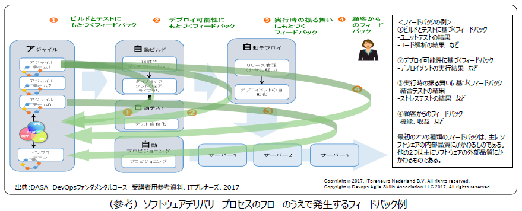
- -役割（ロール)の特徴 (スクラムの例)
- 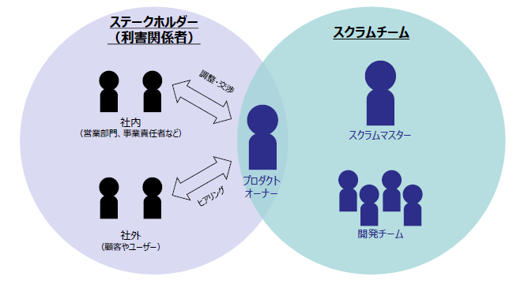
- スクラムで決められている役割（ロール）は、「プロダクトオーナー」「開発チーム」「スクラムマスター」の3種類です。これら全体を「スクラムチーム」と呼び、3つの役割が協調することで、大きな効果を創出します。
- 開発チームは、プロダクトの開発プロセス全体に責任を負い、開発プロセスを通して完全に自律的である必要があります。
- スクラムではこの自律したチームのことを「自己組織化された」チームと呼びます。チームがプロダクトを開発するために必要なスキルを全て備えている必要があります。
- 従来型では、特定の専門性をもったメンバーが役割分担して開発することが一般的でしたが、スクラムの開発チームは、一人が複数のタスクを担う多能工である必要があります。
- ロール
- プロダクトオーナー
- 開発チーム
- スクラムマスター
- -開発プロセスと役割（ロールの関連（スクラムの例）
- 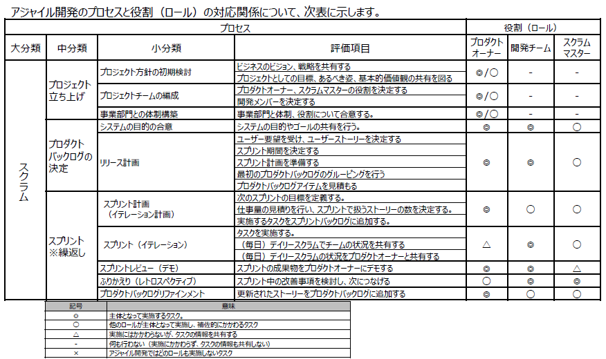
- ■アジャイル開発チームのつくり方
- -アジャイル 開発チームのもつべきスキル
- 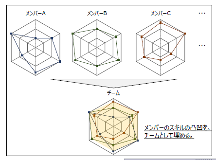
- • アジャイル開発へとパラダイムシフトする際の最も重要な側面の1つは、開発チーム内の役割の違いを理解することです。
- • アジャイル開発におけるチームの特徴は機能横断（クロスファンクション）型のチーム体制です。チームがプロダクトのライフサイクル（設計、ビルド、テスト、デプロイ、実行）を通じて完全に自律的であるためには、チームとしてバランスのとれたスキルセットを備えることが必要です。
- チームメンバーは仕事をこなすための深い開発スキルを持つと同時に、チームとしてパフォーマンスを最大化するためのスキルが必要です。
- • アジャイル開発に必要な全てのスキル・知識を持つ人材を育てることは必須の条件ではありません。一人の個人だけでは、スキル領域ごとのレベルに凸凹がありますが、その凸凹をチームとして埋めていきます。一人の個人だけでは不足している知識・スキルを、チームとして補っていくのです。
- • 従来型の開発では、要件定義、設計、開発からテストを経て運用へと、明確な役割分担のもとにプロセスが進みます。初期工程で仕様をきっちりと決めるため、誰が何をすべきかを明確にすることができます。一般に、SE(設計者)、プログラマー、テスターなどを専任の役割としておくということは珍しくありません。このような役割分担で開発を進めると、タスクの切れ目に、人のアサインや引継ぎなどのオーバーヘッドが生じます。
- •アジャイル開発では、最終プロダクトをリリースするために必要となる全てのスキルが1つのチーム内に備わっているため、タスク間の引継ぎが最小限に抑えられ、プロセス全体のスループットが最適化されます。アジャイル開発では、スピードが重要であり、できるだけ早くユーザー機能を顧客に提供することが重要です。組織は、価値あるフィードバックループを活用でき、自分たちの進んでいる方向が正しいかどうかを判断できることにもつながります。
- •アジャイル開発では、チーム員同士で教えあい、チーム一丸となってプロダクトを開発していきます。チームで仕事をすることにより、個人が得意とする分野だけでなく、より広範な分野の業務を実施できるようになり、個人の成長につなげることができます。このため、専門領域以外のスキルを埋めるために、チーム内の他の人材や他ステークホルダーと連携する能力も備わっていることが重要となります。
- •あるタスクの高度な専門家が活動できない場合でも、プロダクトやサービスを継続的に提供するためには、各開発者が自分の能力に、さらに多くのスキルや知識を追加していくことが重要となります。アジャイルなチームにおいては、リソースは通常は複数のスキルを持ち、必要な場合には積極的にスキルを向上させようと努めます。
- -スキル一覧
- アジャイル開発に必要なスキルを分類して示します。下図では、「アジャイル開発を推進するスキル」と「ソフトウェア開発の各局面で必要なスキル」とに分類して示します。前者は、アジャイル開発に特化したものですが、後者は、従来型においても必要な開発スキルになります。
- 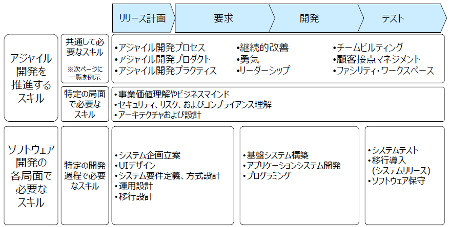
- ■アジャイル開発を推進するスキル例
- 技術スキル
- アジャイル開発プロセス
- リリース計画ミーティング
- イテレーション計画ミーティング
- 計画ゲーム、スプリント計画ミーティング、反復型計画
- イテレーション
- タイムボックス、スプリント、反復
- プランニングポーカー
- 見積りポーカー
- ベロシティ計測
- 日次ミーティング
- 朝会、朝礼、デイリースクラム、スタンドアップミーティング
- ふりかえり
- レトロスペクティブ、リフレクション、内省、反省会
- かんばん
- Kanban、フィーチャーパイプライン
- スプリントレビュー
- デモ
- タスクボード
- スクラムボード、タスクカード
- バーンダウンチャート
- アジャイル開発プロダクト
- ユーザーストーリー
- ストーリーカード
- スプリントバックログ
- インセプションデッキ
- プロダクトバックログ
- マスターストーリーリスト
- アジャイル開発プラクティス
- ペアプログラミング
- ペアワーク、ペアリング
- 自動化された回帰テスト
- リグレッションテスト
- テスト駆動開発
- ユニットテストの自動化
- デベロッパーテスティング
- 受入テスト
- 顧客テスト、機能テスト、ストリーテスト
- システムメタファ
- スパイク・ソリューション
- 実験、曳光弾
- リファクタリング
- シンプルデザイン
- YAGNI
- 逐次の統合
- 継続的インテグレーション
- 常時結合、CI
- 集団によるオーナーシップ
- 共同所有
- コーディング規約
- コーディング標準
- ヒューマンスキル
- 継続的改善
- 私たちは今日、昨日よりもうまく仕事をする
- カイゼンのマインドセット
- 源流管理
- 最初から正しく
- 知識の共有
- 順応性
- 総合
- 勇気
- 伝える情熱
- コーチング
- 自信
- 自発性
- 反省
- 信頼
- オープンな議論
- 実験
- 早く失敗すること
- 変更する勇気
- リーダーシップ
- チームのハイ・パフォーマンス化の促進
- 謙虚さ
- サービスライフサイクルのマインドセット
- 利害関係者のマネジメント
- チームビルディング
- 顧客プロキシ
- オンサイト顧客
- プロダクトオーナー
- ファシリテータ
- スクラムマスター
- アジャイルコーチ
- 自己組織化チーム
- ニコニコカレンダー
- 他者の視点の理解
- コラボレーション
- 相互の説明責任
- 共通の目的
- サービス/プロダクトを総合的にサポートする能力
- 顧客接点マネジメント
- 対面コミュニケーション
- 顧客起点
- 価値起点
- 場づくり
- ファシリティワークスペース
- 共通の部屋
- チーム全体が一つに
- 人材のローテーション
- インテグレーション専用マシン
- ■参考資料
- <参考 1> 従来型ロールとアジャイの比較表
- 従来型ロールとアジャイル型ロールの比較表について
- 従来型ロールとアジャイル型ロールの比較表は、従来型（ウォーターフォール型）開発に従事してきた人材が、アジャイル開発について学ぶ時、従来型ロールとアジャイル型ロールの実施するタスクの違いを比較するための参考資料です。本表のタスクは、iCD2017を参照して、SI型アプリケーションシステム開発に典型的なタスクを抜き出しています。従来型ロールは、企画・開発を職務とするロール（iCDではタスクプロフィールと呼ぶ）を抽出し、タスクとの関連を示しています。今回、このタスクに対して、アジャイル型ロールではどう対応するかを例示しています。従来型の各ロールが実施して各タスクをアジャイル型ロールがどういうフォーメーションで実施しているのかを確認することができます。
- 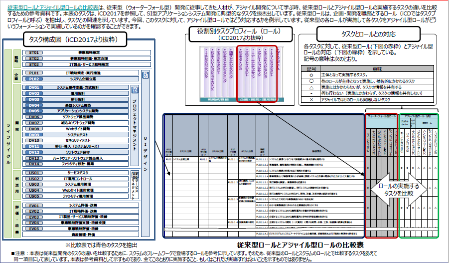
- 従来型ロールとアジャイル型ロールの比較表の見方
- 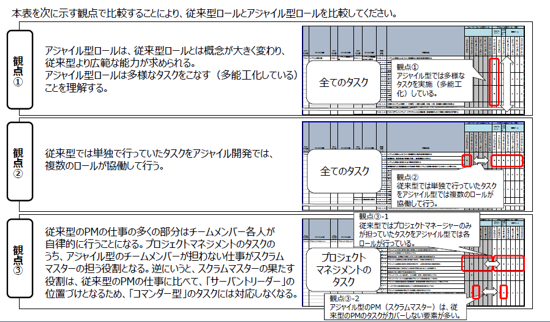
- 観点①
- アジャイル型ロールは、従来型ロールとは概念が大きく変わり、従来型より広範な能力が求められる。
- アジャイル型ロールは多様なタスクをこなす（多能工化している）ことを理解する。
- 観点②
- 従来型では単独で行っていたタスクをアジャイル型では複数のロールが協働して行う。
- 観点③
- 従来型のPMの仕事の多くの部分はチームメンバー各人が自律的に行うことになる。プロジェクトマネジメントのタスクのうち、アジャイル型のチームメンバーが担わない仕事がスクラムマスターの担う役割となる。逆にいうと、スクラムマスターの果たす役割は、従来型のPMの仕事に比べて、「サーバントリーダー」の位置づけとなるため、「コマンダー型」のタスクには対応しなくなる。
- 観点③-1
- 従来型ではプロジェクトマネージャーのみが担っていたタスクをアジャイル型では各ロールが行っている。
- 観点③-2
- アジャイル型のPM（スクラムマスター）は、従来型のPMのタスクがカバーしない要素が多い。
- 従来型ロールとアジャイル型ロールの対応イメージ
- 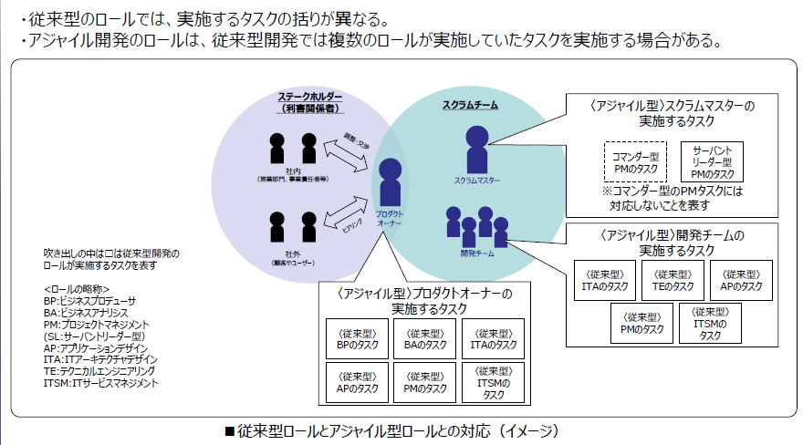
- <参考 2> アジャイル開発の概念整理 アジャイル開発の概念整理
- 箇条書き
- • アジャイル開発の目的
- アジャイル開発とは、ビジネス価値の最大化に向けて、顧客に価値のあるソフトウェアを早く、継続的に提供するためのアプローチです。これを実現するためにアジャイル開発で重要となる事項について説明します。
- • 顧客にとっての価値を知るには
- 顧客にとっての価値とは何かを知るために、実際に作ったものを使ってもらって、顧客が満足しているかどうかを確認します。
- • 常に状況は変化すると考える
- 昨今のビジネス環境は絶えず変化します。それに俊敏に対応するため、ベストではないものの、ベターなビジネス解を徐々に改善していく傾向が強くなっています。こうした状況から生み出されるシステム要求も、ビジネス解の継続的な変化に対応し、変更し続けることになります。アジャイル開発では変化に対応して、価値のあるソフトウェアを早く、継続的に提供していくことが求められます。
- • アジャイル開発の本質
- アジャイル開発での最終的な目標は、ビジネスの価値の最大化です。開発者も常に顧客と同じ目線で、顧客にとっての価値が最大となるよう取り組む姿勢が必要です。
- 一方で、アジャイル開発を作業効率化の１つの手法として考えている方がいるかもしれません。開発者としてなるべくムダな作業を行わないことは、アジャイル開発では基本的な考え方ではありますが、いくら作業を効率化できたとしても、価値あるものを創出できなければ意味がありません。
- • 変化に柔軟に対応するためには
- 顧客の要求も絶えず変化しますので、顧客からのフィードバックを短いサイクルで得ながら、提供したものに価値があるかどうかを継続して確認します。
- • ビジネス価値のある動くソフトウェアとは
- アジャイル開発では、ソフトウェアを提供するため、タイムボックスを使用した反復型のアプローチをとります。顧客が評価できるソフトウェアを提示し、顧客からのフィードバックを短いサイクルで得ながら、提供したものに価値があるかどうかを確認します。（現場現物現実、高速仮説検証サイクル）
- • 顧客とのWin-Winの関係を構築する
- 顧客からのフィードバックを効率的、効果的に得るためには、開発者と顧客が直接対話しながら、Win-Winの関係を築いていることが肝心です。
- • 技術・プログラミングの重要性
- 人間の能力を最大限に活用するために、開発者は何を身に付けておくべきでしょうか？
- アジャイルソフトウェア開発宣言の背後にある原則の1つにあるように、「技術的卓越性と優れた設計に対する不断の注意が機敏さを高める」ため、常に最新の技術を身に着ける努力が必要となってきます。アジャイル開発では動くソフトウェアに価値を求めるため、とりわけプログラミングに関する知識やスキルは必須とも言えるでしょう。
- • 自律的なチームで、人の能力を最大限に発揮する
- アジャイル開発に限った話ではありませんが、組織やプロジェクトにおいて一番大切なものは“人”です。
- 自動化が進んでも、やはり人間でなければできないことはたくさんあります。特にアジャイル開発では、ムダな作業を極力減らし、空いた時間で人間の能力を最大限に活用できるようにすることが求められます。
- 開発チームは開発プロセスのライフサイクル全体を通して完全に自律している（自己完結している）必要があります。そのため、チームは顧客とエンドツーエンドでコミュニケーションするとともに、開発プロセス全体を遂行するために必要な全ての専門知識やスキルをチームとして備えている必要があります。
- これにより、要員アサインや承認のための待ちなどを排除してムダをなくすことができます。
- アジャイル開発を支える柱（大原則）
- • 人間中心
- 人間中心は、従来の顧客起点ではなく、社会を構成する一人一人（顧客だけなく、経営者も従業員も）の生きる意味を考えることが社会の価値につながるということを示しています。
- また、提供する人間の能力を最大限に活かすことが重要です。個人個人の能力が社会の中で創造的かつ健全に開花し、多様なチーム、組織、コミュニティに価値を提供し、その中で生きがいを持って協働できる働きやすい社会を目指すことが重要です。ITはそれをエンパワーするものであるべきです。
- • 技術の尊重
- 技術力をもって生産性と品質・信頼性を担保するとともに、常に適切な技術とスキルを学習し、それを社会に還元し、次世代に継承する努力を怠らず、学習する組織・社会をす目指すことも重要です。
- 技術活用は、プログラミング的思考、よい技術、よい設計によりよい品質を追求すること、できるだけ自動化し、人の無用な負担を排除することなどが該当します。
- • 人間中心と技術活用のバランスが重要
- 人間中心と技術活用という２本の柱のバランスが重要です。２本の柱でイノベーティブな社会変革を人間中心で仮説設定・検証を繰り返しながら進めていきます。特に技術中心で考えてきた日本の企業に対して人間中心なイノベーションを個人・組織に植えつけることが必要です。本質を理解せずに形だけ真似しても成果は創出することはできません。
- まとめ
- これまでの説明を総合して、アジャイル開発全体の概念構造を「アジャイル開発の家」として表現してみました。
- 家をモチーフに、アジャイル開発の目指すもの（屋根、梁）、開発活動を支える大原則（柱、土台）、そして目的を達成するための活動（家の中）を表しています。アジャイル開発とは何かを整理する上での参考としてください。
- 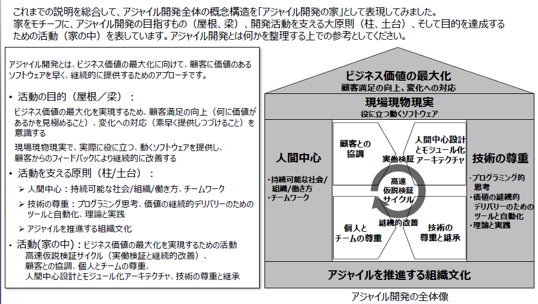
- アジャイル開発とは、ビジネス価値の最大化に向けて、顧客に価値のあるソフトウェアを早く、継続的に提供するためのアプローチです。
- • 活動の目的（屋根／梁）：
- ビジネス価値の最大化を実現するため、顧客満足の向上（何に価値があるかを見極めること）、変化への対応（素早く提供しつづけること）を意識する
- 現場現物現実で、実際に役に立つ、動くソフトウェアを提供し、顧客からのフィードバックにより継続的に改善する
- • 活動を支える原則（柱/土台）：
- ➢ 人間中心：持続可能な社会/組織/働き方、チームワーク
- ➢ 技術の尊重：プログラミング思考、価値の継続的デリバリーのためのツールと自動化、理論と実践
- ➢ アジャイルを推進する組織文化
- • 活動(家の中)：ビジネス価値の最大化を実現するための活動
- 高速仮説検証サイクル（実働検証と継続的改善）、顧客との協調、個人とチームの尊重
- 人間中心設計とモジュール化アーキテクチャ、技術の尊重と継承
-
- アジャイル開発が注目される理由
- とりわけIoTやデジタル・トランスフォーメーションにかかわるソフトウェア開発の現場において、頻繁に聞かれるキーワードの1つに「アジャイル」があります。これは1990年代後半に提唱され始めたソフトウェアの開発手法であり、従来の「ウォーターフォール」型のソフトウェア開発の対極に位置するものと捉えられます。
- 要件定義から基本設計、詳細設計、プログラミング、各種テストといった工程でプロジェクトを進めるウォーターフォールは、プロジェクトの計画を立てやすいこと、進捗管理を行いやすいことなどがメリットとして挙げられます。しかし難点となっているのは、プロジェクトの最初期の段階で要件が固まっていて、それが変わらないことが前提となっていることです。もしプロジェクトの途中で要件が変わるということになれば、膨大な手戻りコストが発生し、場合によっては大幅なプロジェクトの遅延といった事態を招きます。
- これに対し、IoTやデジタル・トランスフォーメーションの領域はビジネス環境や顧客ニーズの変化により、要件が変わることが珍しくありません。たとえばソフトウェア開発に1年間かかると考えた場合、1年後のビジネス環境や顧客ニーズを正確に捉えて要件を定義することは至難の業でしょう。こうした課題に対応する上で、最適な開発手法として注目されているのがアジャイル開発です。
- アジャイル開発の大きな特徴として、1週間から2週間程度の開発期間を反復して繰り返すことが挙げられます。この期間の中で開発する機能の設計と実装、テストまでを行い、開発期間終了時にはソフトウェアとしてリリースします。これにより、ソフトウェアの機能を段階的にチェックすることが可能です。このような形でプロジェクトを進めることにより、アジャイル開発は途中で要件が変わってもウォーターフォールよりも対応しやすく、手戻り工数も抑えられるという利点があります。
- 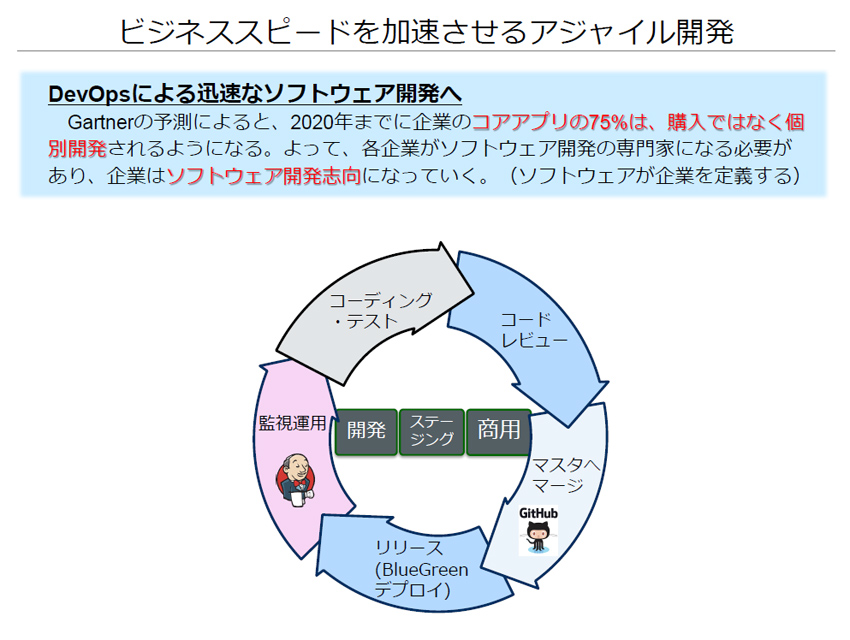
- このアジャイル開発とともにソフトウェアの開発現場で広まり始めているのが「マイクロサービスアーキテクチャ」です。これは一枚岩のソフトウェアの中に複数の機能を詰め込むのではなく、個々の機能を個別のソフトウェア（サービス）として開発し、それらをAPIなどで連携させることによってシステムを構成するという考え方になります。機能単位で開発を行うためアジャイル開発と相性がよく、また機能単位での修正やアップデートが行えることから、要件の変更にも柔軟に対応することが可能です。
- 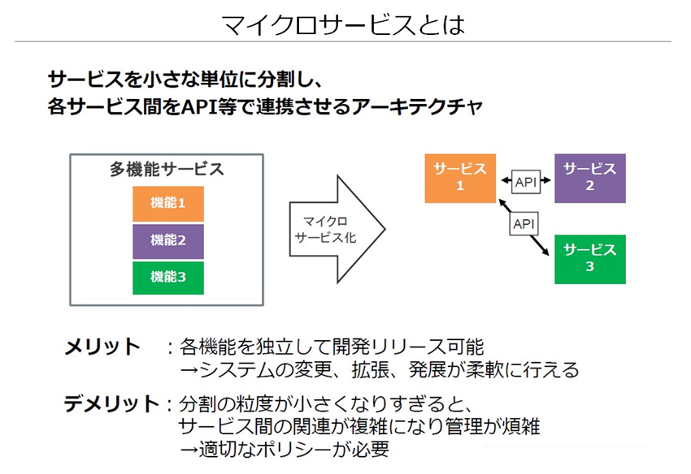
- アジャイル開発に最適なプラットフォームとなるPaaS
- このアジャイル開発やマイクロサービスアーキテクチャの考え方を採り入れる上で、意識しておきたいのは最適なインフラの構築です。ソフトウェアのレイヤーがどれだけ柔軟になっても、その下のサーバーやネットワークといったインフラが硬直的では、せっかくのアジャイル開発やマイクロサービスアーキテクチャのメリットを生かせないためです。
- 柔軟なインフラを実現するための具体的なサービスとしては、PaaSやコンテナが挙げられます。PaaSはソフトウェアの実行環境を提供するクラウドサービスであり、開発者はサーバーやOSの存在を意識する必要はありません。提供される環境の中で開発しなければならないという制約はありますが、その一方でOSやミドルウェアのインストールや設定といった手間が省けることは魅力でしょう。
- 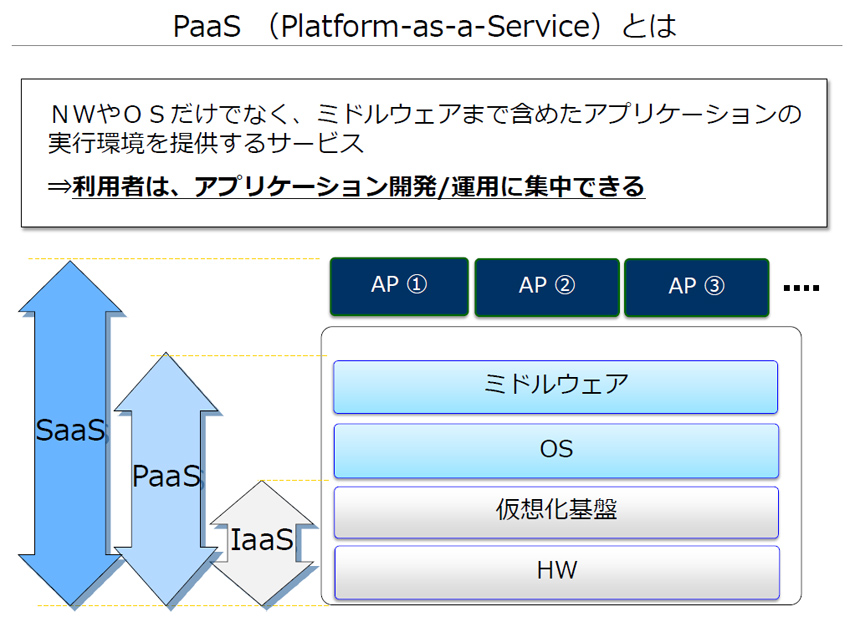
- PaaSによっては、ブルーグリーンデプロイメントを容易に実現する機能が提供されていることもあります。これはブルー系とグリーン系と呼ばれる、2つの本番環境を交互に切り替えられるようにする仕組みです。
- たとえばブルー系を使ってサービスを提供していて、ソフトウェアのバージョンアップを行いたいとします。通常であれば、一度サービスを止めてバージョンアップを行うことになります。しかしブルーグリーンデプロイメントの仕組みが使えれば、待機系となっているグリーン系であらかじめ新しいバージョンを実行し、ブルー系から切り替えることで瞬時にソフトウェアを切り替えられます。これにより、システム停止時間を最小限に抑えられるほか、ブルー系とグリーン系がまったく同じ環境であれば、環境の差異による不具合も気にする必要がありません。
- すでに多くのクラウドベンダーがPaaSやコンテナ環境を提供
- 一方のコンテナは、1つのOS（ホストOS）上で、ソフトウェアを実行するための独立した空間を提供する仕組みです。イメージはサーバー仮想化技術と似ていますが、コンテナでは仮想化したハードウェアを使うのではなく、開発したソフトウェアとそれに必要な部品（ランタイム）をほかのソフトウェアから隔離しつつ直接実行します。このため、仮想によるオーバーヘッドがないほか、サーバー仮想化よりも物理リソースの利用効率がよく、1つの物理サーバー上でより多くのコンテナを実行できるというメリットがあります。
- 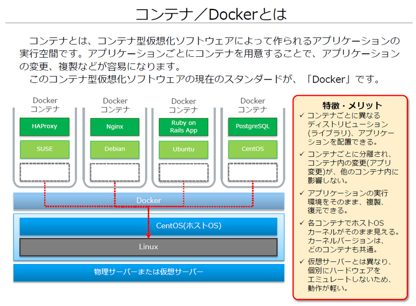
- 環境依存を意識することがないこともコンテナの大きな利点です。このため開発環境のコンテナを使ってソフトウェアを開発した後、それを本番環境のコンテナに移すといった際に環境に合わせて設定などを変更するといった必要がなく、環境依存を気にせずに開発することができます。
- PaaSとコンテナに共通する特長として、ソフトウェアを実行するための環境を手早く整えられるため、スクラップ＆ビルドが容易であることも挙げられます。これもアジャイル開発の利点を生かす上で重要なポイントであり、また開発スピードの向上にもつながるでしょう。
- 国内では、NTTコミュニケーションズが「Enterprise Cloud」において、オープンソースで開発されているPaaSプラットフォームである「Cloud Foundry」や、DockerコンテナやDockerホストを容易に管理する「Rancher」を利用したサービスを用意しています。グーグルの「Google Cloud Platform」やマイクロソフトの「Microsoft Azure」、アマゾンの「Amazon Web Services」など、各社のクラウドサービスではすでにPaaSやコンテナ環境を提供しており、手軽に試すことができます。またまずはこれらのサービスを試用し、PaaSやコンテナのメリットを確かめてみるとよいでしょう。
- クラウド活用において重要なポイントとなるネットワークインフラ
- クラウドサービスを積極的に活用する、いわゆる“クラウドネイティブ”なソフトウェア開発では、PaaSやコンテナ以外のサービスも積極的に利用したいところでしょう。具体的には、ビッグデータ分析のための基盤、あるいは機械学習を可能にするサービスなどが考えられます。
- このようにクラウドを活用していくと、言語処理はGoogle、機械学習はMicrosoft Azureなど、複数のクラウド基盤をまたいでシステムを構築するといったことも十分に考えられます。そこで重要となるのがネットワークです。
- 各クラウドを接続するネットワークを個別に構築すれば、インフラの運用負荷が増大する恐れがあるほか、トラフィック量の増減などといった変化への対応にも時間を要する可能性があります。インターネットを利用して接続するのも1つの手ですが、セキュリティ面での不安が残ります。
- データセンターやクラウド上で運用している、既存システムとの接続が必要となるケースもあるでしょう。たとえばIoTデバイスから取得したデータとERPに蓄積されている情報を統合して分析するといったソフトウェアを開発するといった場合、クラウドサービスとして提供されているPaaSやコンテナ基盤と自社システムを接続する必要があり、ネットワークの要件はより複雑になります。
- このような場面で重宝するのが、複数のクラウドサービスをまたいで閉域網での接続を実現するVPNサービスで、具体的にはNTTコミュニケーションズの「SD-Exchange」や「Multi-Cloud Connect」などが挙げられます。こうしたサービスであれば、クローズドVPNの1拠点として各クラウドやデータセンター上のコロケーションを接続できるため、ネットワークインフラをシンプルに保ったまま、複数のクラウドやオンプレミスのシステムを連携したシステムを構築することが可能です。
- 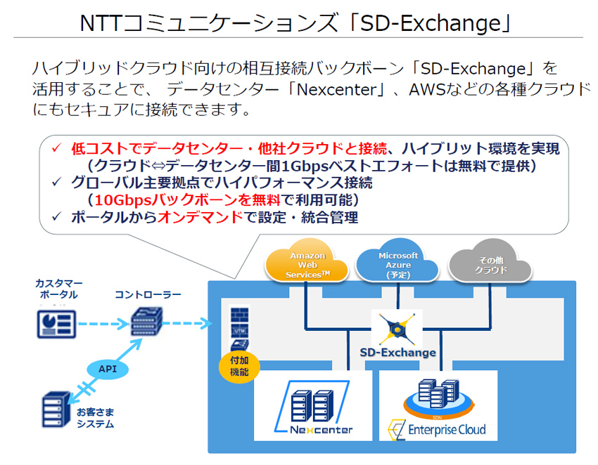
- アジャイル開発に取り組む前に
- それではPaaSやコンテナを利用することでどのようなメリットがあるのか、具体的なユースケースで見てみましょう。まずIaaSで提供される仮想サーバーに加え、PaaSやコンテナ技術も活用してIoTに取り組み、SCMを最適化した例です。昨今では、SCMのような従来型のシステムであっても、あらゆる要求に対応できる柔軟性や、スピード感のあるアプリケーション開発が求められることが少なくありません。それを実現するために、PaaSやコンテナ技術を活用するというわけです。
- 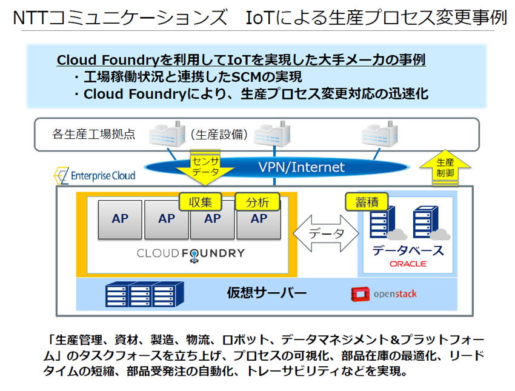
- ただし、こうしたインフラを活用してアジャイル開発を行うためには、相応のスキルやノウハウが必要となります。特にアジャイル開発は従来のウォーターフォール開発とは異なる独自の手法を学び、それに慣れるプロセスが欠かせません。その際に有用なのが、アジャイル開発のプロセスを学ぶことができるトレーニングコースやワークショップへの参加です。
- 前述したとおり、アジャイル開発にはさまざまなメリットがありますが、それを最大化するためには特有のプロセスについて理解を深めることが欠かせません。それらをトレーニングやワークショップで学びつつ、さらにPaaSやコンテナ技術の実環境にも触れることができれば、より深くクラウドネイティブなソフトウェア開発を理解できるでしょう。
- なおアジャイルやクラウドネイティブなソフトウェア開発を実践する際には、いきなり大規模なプロジェクトで試すのではなく、まずはスモールスタートで感触を確かめるべきです。そうしてノウハウを社内に蓄積し、徐々にプロジェクトの規模を大きくしていくという流れです。またアジャイル開発に知見を持ち、PaaSやコンテナ環境をクラウドサービスとして提供しているベンダーをパートナーに選べば、安心してプロジェクトを進められるのではないでしょうか。
- 用語解説
- IoT
- 「Internet of Things」の略。情報機器や通信機器だけではなく、家電や自動車などあらゆるものがインターネットに繋がり、相互通信を行う事で新しい価値を生み出すと言う概念。あらゆるモノをインターネットに繋ぐことによって、離れたモノを操作したり、離れたモノの現状を知ることができる。既に家電やオーディオ機器などをインターネットに接続する流れができている。
- アジャイル開発
- 開発手法の一種で、はじめから厳密な仕様を決めず、短期間で実装やテストを細かく繰り返し、徐々に開発を進めていく。仕様や設計の変更を念頭においた開発手法のため、不具合があった場合の作業のやり直しが簡単にできる。アジャイル（agile）とは英語で「俊敏な」「機敏な」という形容詞。
- アジャイル開発の対となる開発手法として、「ウォーターフォール開発」がある。こちらは仕様やプロジェクト完了日など、緻密な計画を立てて開発に取り掛かる。伝統的な手法ではあるものの、工程を後戻りすることは考慮されていないため、開発途中での仕様変更が難しい。
- マイクロサービス アーキテクチャ
- 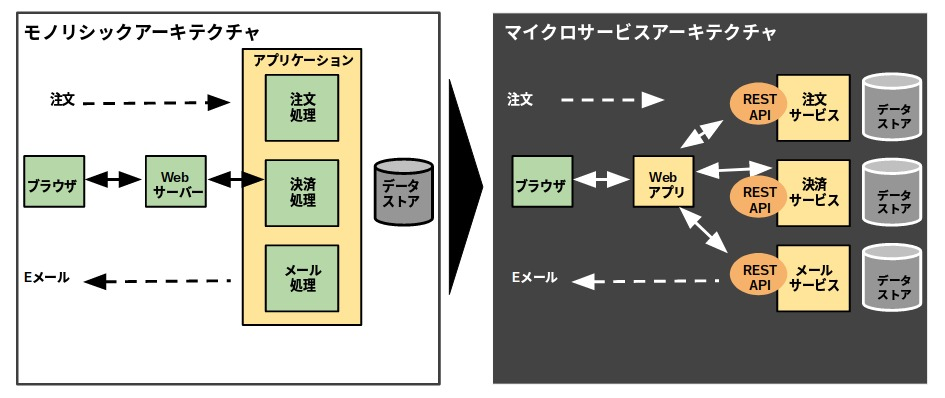
- API
- ソフトウェアが共通して利用する機能を、OSやプラットフォームなどにあらかじめ備え付け、その機能を呼び出すための手順やデータ形式などを定めた規約。APIに従って必要な機能を呼び出すプログラムを記述するだけで、その機能を利用したアプリケーションの開発が容易にできるという特徴がある。
- PaaS
- インターネットを通じたサービスのひとつ。アプリケーションが稼働する為のプラットフォームをインターネット経由で提供し、遠隔から利用できるようにしたもの。PaaSを利用することで、独自の業務アプリケーションを稼動させるハードウェアやOSなどを準備する必要が無い。また、利用した分だけ月額利用料金として払うことが可能になるため、低コストで運用できる。なおPaaSとは「Platform as a Service 」の略。
- SCM
- 自社内または取引先との間で受発注や在庫、販売、物流などの情報を共有し、原材料や部材、製品の流通の全体最適を図る情報システム。
- Supply Chain Managementの略。
- IaaS
- インターネットを利用したコンピュータの利用形態。情報システムを構築及び稼働させる基盤（機材や回線等）を、インターネット経由のサービスとして提供し、利用できるようにしたもの。企業はインターネットを通じて必要な時だけ利用し、利用に応じて課金されるため、自社で用意するよりも柔軟に対応でき、メンテナンスや障害などの対応も任せられるメリットがある。読みは「イアース」または「アイアース」。IaaSは「Infrastructure as s Service」の略。